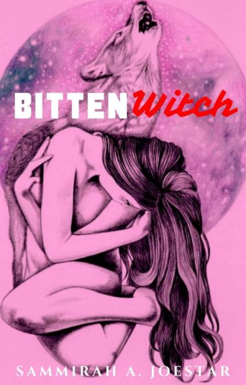
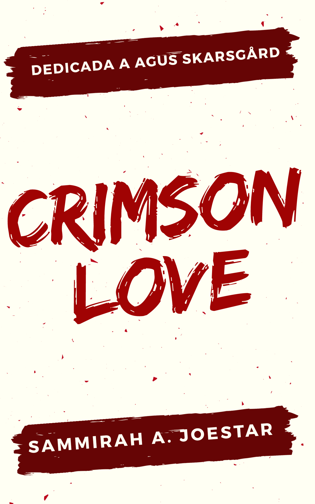
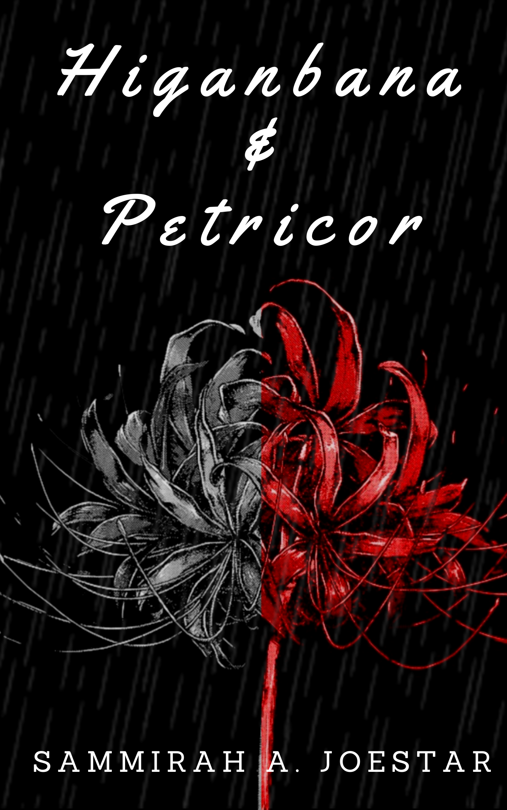
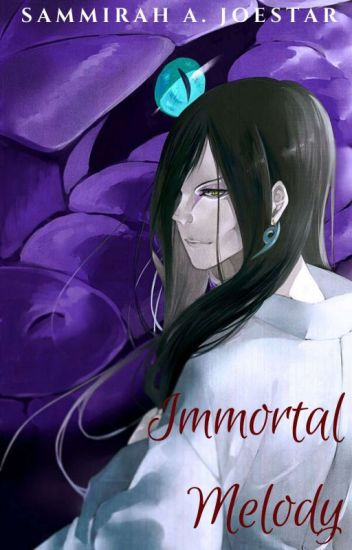
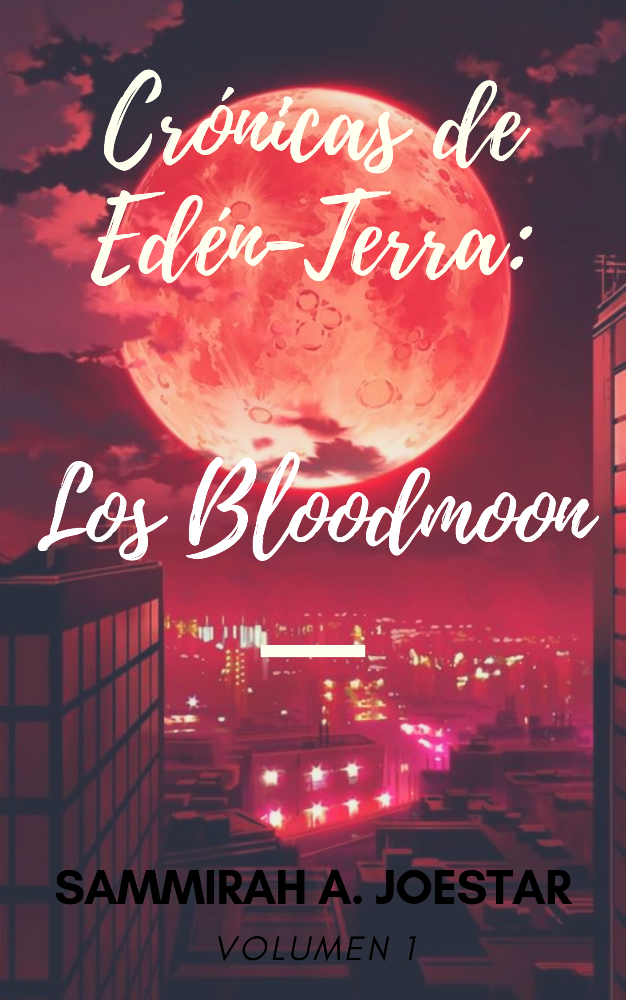
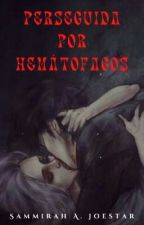
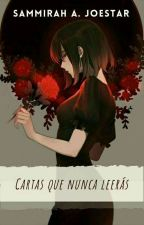
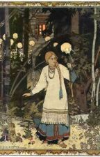
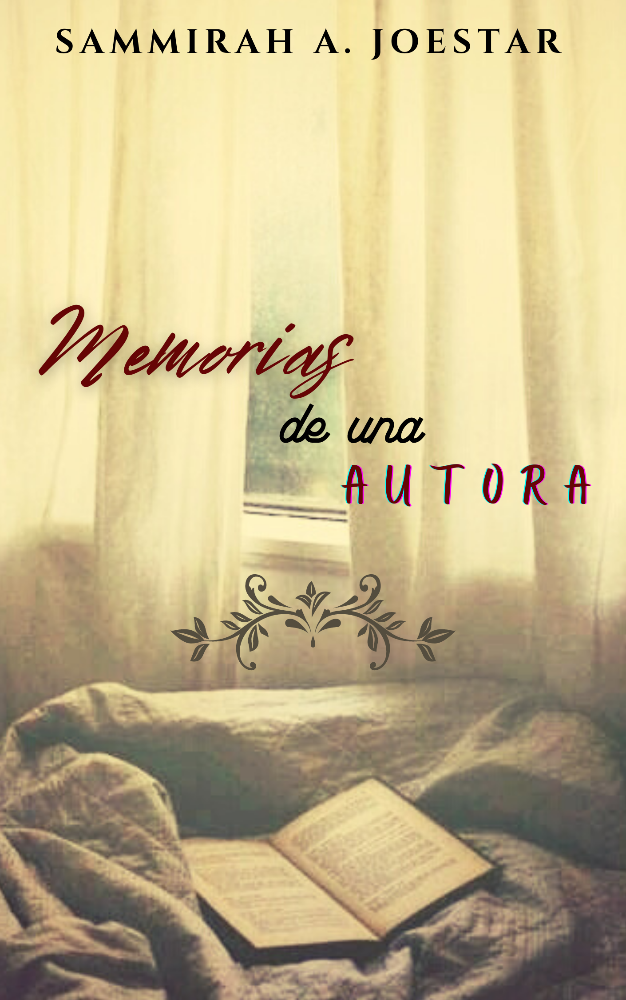
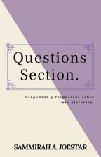

Un poco sobre mí
She/Her
"Las palabras son veneno. Las palabras son salvación. A veces las controlo otras veces me controlan ellas."
"En la tristeza también hay belleza."
(Frases propias.)
Amo leer y escribir, por eso quiero compartir con ustedes mis historias y también leer las suyas.
Escribo las historias que veo y escucho en mi mente, e intento convertirlas en novelas o cuentos.
Escribo fanfics inspirados en mis personajes favoritos. Pesando en que me gustaria ser la protagonista.
Espero que disfruten de mis escritos tanto como yo he disfrutado escribirlos.
Acontinuación les dejo algunos títulos de mis historias acompañasdas de sus respectivas sinopsis. Recuerden que si quieren leer alguna, solo deben tocar en la imagen que deseen para ir directo a Wattpad en donde podrán leer estas maravillosas historias.
Fanfics Animes y Series
Bitten Witch

Este fic es sobre Jeremy Danvers de la serie Bitten.
Contiene escenas +18, lenguaje obseno que podrían ser perturbadoras para le público en general.
Crimson Love

Este es mi primer fic, es sobre Eric Northman. Porque él se merece tener un amor duradero, un buen ¿final? feliz.
Dedicada a @mapStyles
Higambana & Petricor
Sesshomaru es mi personaje favorito del anime InuYasha. Y es por eso que hice este fic, espero les guste y gracias por leer.
Inmortal Melody

Este otro fic es de mi personaje favorito del anime Naruto, Orochimaru.
Desde ya les agradezco por tomarse el tiempo para leer y espero sea de su agrado.
Historias Propias
Los Bloodmoon
Esta es mi primer novela, puede contener algunas descripciones de violencia y ocacionalmente escenas que pueden considerarse sexuales o sensibles para el lector.
Perseguida por Hematófagos

Esta historia corta está inspirada en un sueño que tuve el 28/08/2021.
Es completamente de mi autoria.
En un día de Tormeta

Las historias escritas aquí están creadas a partir de mis locos y bizarros sueños o pesadillas. relatos cortos que se han quedado en mi mente más de lo que deberían.
50 Años de Espera

Recuerdos del pasado teñidos con un poco de presente. Entre guerras y amores un soldado retirado lucha contra la vejez tratando de no olvidar a la bibliotecaria que conquistó su corazón el día de navidad.
Cartas que Nuna Leerás
Cuando tenía 15 años perdí a una persona muy importante. Han pasado más de 10 años y todavía hay cosas que no cierro o supero. Por eso, decidí escrirle cartas con todas esas cosas que nunca podré decirle.
Cuentos y Otros
Cuentos Rusos

De niña me encantaba leer éstos cuentos rusos que ahora compartiré con ustedes.
No soy autora solo les comparto, espero los disfruten tanto como yo.
Memorias de una Autora
Aquí escribiré lo que pienso o siento. Tal vez en su mayoría sean cosas malas que me han pasado y lo pensamientos que tenga al respecto sean igual de malos. Igual intentaré escribir de cosas buenas también.
Questions Section

Preguntas y repuestas sobre mis historias.
Quiero que sea un apartado para interactuar con mis lectores/escritores. Y que se sientan libres de preguntar lo que les intriguen o no entiendan de mis historias.
Sigueme